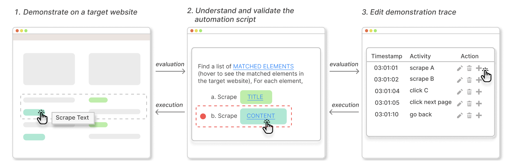

Web automation is frequently used by data scientists, domain experts, and programmers to complete
time-consuming data
collection tasks. However, developing web automation scripts requires familiarity with a programming language
and HTML,
which remains a key learning barrier for non-expert users. We provide MIWA, a mixed-initiative web automation
system
that enables users to create web automation scripts by demonstrating what content they want from the targeted
websites.
Compared to existing web automation tools, MIWA helps users better understand a generated script and build
trust in it
by (1) providing a step-by-step explanation of the script's behavior with visual correspondence to the target
website,
(2) supporting greater autonomy and control over web automation via step-through debugging and fine-grained
demonstration refinement, and (3) automatically detecting potential corner cases that are handled improperly
by the
generated script. We conducted a within-subjects user study with 24 participants and compared MIWA with
Rousillon, a
state-of-the-art web automation tool. Results showed that, compared to Rousillon, MIWA reduced the task
completion time
by half while helping participants gain more confidence in the generated script.

Keywords: Programming by Demonstration, Web
Automation, Data Science
Publication:
MIWA: Mixed-Initiative Web Automation for Better User Control and Confidence
Wei-Hao Chen, Xiaoyu Liu, Jiacheng Zhang, Ian Iong Lam Zhicheng
Huang,
Rui Dong, Xinyu
Wang, Tianyi Zhang
UIST 23: Proceedings of the 36th Annual ACM Symposium on User Interface Software and
Technology